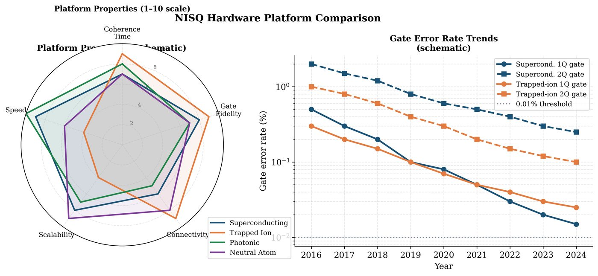

Chapter 17: NISQ Hardware Platforms¶
Noisy Intermediate-Scale Quantum (NISQ) devices are today’s quantum computers: 50–1000 qubits, limited coherence times, imperfect gates, restricted connectivity. This chapter surveys the four main hardware platforms — superconducting circuits, trapped ions, photonic systems, and neutral atoms — covering their physical principles, noise models, gate sets, and implications for QML algorithm design.
Learning Objectives
By the end of this chapter, you will be able to:
-
Describe the operating principles of each major NISQ hardware platform
-
Identify the native gate sets and connectivity graphs of IBM, IonQ, and Rigetti
-
Model hardware noise using depolarizing, dephasing, and amplitude damping channels
-
Transpile and optimize quantum circuits for specific hardware topologies
-
Select appropriate hardware based on QML task requirements
17.1 Superconducting Circuits¶
17.1.1 Physical Principles¶
Superconducting qubits are lithographically fabricated circuits (aluminum on silicon) cooled to \(\sim15\) mK. The qubit is formed by the transmon: a Josephson junction shunted by a large capacitor, creating an anharmonic quantum oscillator with non-degenerate energy levels.
where \(E_C\) is charging energy, \(E_J\) is Josephson energy, and \(n_g\) is the offset charge. The qubit is the two-level system \(\{|0\rangle, |1\rangle\}\) corresponding to the ground and first excited states.
Key parameters (typical IBM quantum):
-
Qubit frequency: \(4\)–\(6\) GHz
-
\(T_1\) (relaxation): \(50\)–\(500\) \(\mu\)s
-
\(T_2\) (dephasing): \(50\)–\(300\) \(\mu\)s
-
Single-qubit gate time: \(\sim50\) ns; error \(\sim0.05\%\)
-
Two-qubit (CNOT) gate time: \(\sim300\) ns; error \(\sim0.5\%\)–\(1\%\)
17.1.2 Native Gate Set and Connectivity¶
IBM Quantum uses:
-
Native 1Q gates: \(\{R_z(\theta), SX, X\}\)
-
Native 2Q gate: \(\text{ECR}\) or \(\text{CX}\) (CNOT)
-
Connectivity: Heavy-hex lattice (each qubit connected to 2–3 neighbors)
Note
The heavy-hex connectivity restricts CNOT availability. All-to-all connectivity would require SWAP gates (3 CNOTs each) for non-adjacent qubits, increasing circuit depth by \(O(\sqrt{n})\) for most algorithms.
17.2 Trapped-Ion Qubits¶
17.2.1 Physical Principles¶
Trapped-ion quantum computers use individual atomic ions (e.g. \(^{171}\)Yb\(^+\), \(^{133}\)Ba\(^+\)) confined in electromagnetic (Paul) traps. The qubit is encoded in two electronic states (hyperfine or optical transitions).
Advantages over superconducting:
-
\(T_1 > 10\) minutes (vs. \(\mu\)s for superconducting)
-
All-to-all connectivity via collective motional modes
-
High fidelity: 1Q \(> 99.9\%\), 2Q \(> 99.5\%\)
-
Low crosstalk: ions are well-separated (\(\sim10\) \(\mu\)m)
Disadvantages:
-
Slower gates: 2Q gate \(\sim100\) \(\mu\)s (vs. 300 ns superconducting)
-
Scalability: trapped-ion chains limited to \(\sim50\) qubits (motional mode crowding)
17.2.2 Mølmer-Sørensen Gate¶
The native 2Q gate for trapped ions is the Mølmer-Sørensen (MS) gate:
For \(\chi=\pi/2\): MS\((\pi/2) = \frac{1}{\sqrt{2}}\begin{pmatrix}1&0&0&-i\\0&1&-i&0\\0&-i&1&0\\-i&0&0&1\end{pmatrix}\), which can generate maximally entangled states.
17.3 Photonic Quantum Computing¶
Photonic quantum computers encode qubits in photon states (dual-rail encoding: \(|0\rangle\) = photon in lower path, \(|1\rangle\) = photon in upper path) or continuous-variable systems (coherent/squeezed states).
Continuous-variable (CV) QML (Xanadu Strawberry Fields):
-
Gates: displacement \(D(\alpha)\), squeezing \(S(r)\), beamsplitter \(BS(\theta,\phi)\)
-
Measurement: homodyne (Gaussian), photon number (non-Gaussian)
-
Advantage: room temperature operation, high speed (\(\sim\)MHz clock)
-
Disadvantage: non-Gaussian resources required for universal computation
Key CV gates:
17.4 Neutral Atom Arrays¶
Neutral atom processors (Rydberg arrays: Harvard, QuEra, Pasqal) trap neutral atoms in reconfigurable optical tweezer arrays. Qubits are encoded in hyperfine ground states.
Rydberg blockade mechanism: When two atoms are within blockade radius \(R_b\), the Rydberg interaction prevents simultaneous excitation:
This implements a controlled-\(Z\) (CZ) gate between neighboring atoms.
Advantages:
-
2D connectivity: atoms arranged in arbitrary 2D geometry
-
Large system sizes: 256+ qubits demonstrated (Ebadi et al., 2021)
-
Reconfigurable: atoms can be moved between shots
-
Analog mode: directly simulate Ising Hamiltonians
17.5 Hardware Noise Models¶

17.5.1 Depolarizing Channel¶
Shrinks the Bloch vector by factor \((1-4p/3)\). Models random Pauli errors.
17.5.2 Dephasing (Phase-Damping) Channel¶
Destroys off-diagonal coherences: \(\rho_{01} \to (1-2p)\rho_{01}\).
17.5.3 Amplitude Damping Channel¶
Models energy relaxation (\(T_1\) decay):
where \(\gamma = 1-e^{-t/T_1}\) is the decay probability.
17.5.4 Platform Comparison¶
| Platform | Qubits | \(T_1\) | Gate Error (2Q) | Connectivity | Gate Speed |
|---|---|---|---|---|---|
| Superconducting (IBM) | 127+ | \(100\,\mu\)s | \(0.5\)–\(1\%\) | Heavy-hex | \(300\) ns |
| Trapped ion (IonQ) | 32+ | \(> 1\) min | \(< 0.5\%\) | All-to-all | \(100\,\mu\)s |
| Photonic (Xanadu) | 216 | N/A | \(\sim1\%\) | Programmable | \(\sim\)ns |
| Neutral atom (QuEra) | 256 | \(> 1\) s | \(0.5\)–\(1\%\) | Reconfigurable | \(\mu\)s |
17.6 Circuit Transpilation¶
Transpilation converts a logical circuit to hardware-native form:
-
Gate decomposition: Express all gates in native gate set
-
SWAP routing: Insert SWAP gates for non-adjacent CNOTs
-
Optimization: Cancel redundant gates, merge rotations
-
Scheduling: Minimize circuit depth via parallelism
from qiskit import QuantumCircuit, transpile
from qiskit_aer import AerSimulator
from qiskit_aer.noise import (NoiseModel, depolarizing_error,
amplitude_damping_error)
from qiskit_ibm_runtime.fake_provider import FakeNairobi
# Build a simple VQC
qc = QuantumCircuit(4, 4)
qc.h(range(4))
qc.cx(0, 1)
qc.cx(1, 2)
qc.cx(2, 3)
qc.ry(0.5, range(4))
qc.measure(range(4), range(4))
# Get real hardware noise model from IBM fake backend
backend = FakeNairobi()
noise_model = NoiseModel.from_backend(backend)
# Transpile to hardware native gate set
transpiled = transpile(qc, backend=backend, optimization_level=3)
print(f"Original depth: {qc.depth()}")
print(f"Transpiled depth: {transpiled.depth()}")
print(f"Original gates: {qc.count_ops()}")
print(f"Transpiled gates: {transpiled.count_ops()}")
# Simulate with noise
sim = AerSimulator()
sim.set_options(noise_model=noise_model)
job = sim.run(transpiled, shots=2048)
counts = job.result().get_counts()
# Compare noiseless vs noisy
sim_ideal = AerSimulator()
job_ideal = sim_ideal.run(transpile(qc, sim_ideal), shots=2048)
counts_ideal = job_ideal.result().get_counts()
# Total variation distance
from collections import defaultdict
all_keys = set(counts) | set(counts_ideal)
p_noisy = {k: counts.get(k, 0)/2048 for k in all_keys}
p_ideal = {k: counts_ideal.get(k, 0)/2048 for k in all_keys}
tv = 0.5 * sum(abs(p_noisy[k] - p_ideal[k]) for k in all_keys)
print(f"\nTotal variation distance (noisy vs ideal): {tv:.4f}")
# Custom noise model
custom_noise = NoiseModel()
# Depolarizing error after each CNOT
cnot_error = depolarizing_error(0.01, 2) # 1
custom_noise.add_all_qubit_quantum_error(cnot_error, ['cx'])
# Amplitude damping for all 1Q gates (T1 ~ 50us, gate time 50ns)
gamma = 1 - np.exp(-50e-9 / 50e-6) # P(decay) per 1Q gate
t1_error = amplitude_damping_error(gamma)
custom_noise.add_all_qubit_quantum_error(t1_error, ['u', 'rz', 'sx'])
print(f"\nAmplitude damping rate per gate: {gamma:.6f}")
print(f"This means T1 decay is {'negligible' if gamma < 1e-4 else 'significant'}")
17.7 Chapter Summary¶
Chapter Summary
-
Superconducting (IBM, Google, Rigetti): Fast gates (ns), nearest-neighbor connectivity, \(T_1\sim100\,\mu\)s. Dominant platform.
-
Trapped ion (IonQ, Quantinuum): Slow gates (\(\mu\)s), all-to-all connectivity, very high fidelity. Best for algorithms requiring many 2Q gates.
-
Photonic (Xanadu): Room temperature, high speed, CV framework, non-Gaussian operations needed for universality.
-
Neutral atoms (QuEra, Pasqal): Large scale (256+ qubits), reconfigurable 2D geometry, Rydberg blockade for 2Q gates.
-
Noise models: Depolarizing (random Pauli), dephasing (\(T_2\) decay), amplitude damping (\(T_1\) decay). Use Qiskit for hardware-accurate simulation.
Exercises
Exercise . Compare trapped-ion and superconducting qubits on four dimensions: gate speed, coherence time, connectivity, and scalability. For which QML tasks would you prefer each platform?
Exercise . Derive the Bloch vector evolution under a depolarizing channel with rate \(p\). Show that after \(L\) identical gates, the Bloch vector magnitude is \((1-4p/3)^L\).
Exercise . Using Qiskit’s FakeBackend, transpile a 5-qubit QAOA circuit with \(p=2\) layers and measure: (a) circuit depth before and after transpilation, (b) CNOT count, (c) approximate simulation accuracy using TVD between noisy and noiseless runs.
Further Reading
-
Krantz et al. (2019) — superconducting qubits review
-
Bruzewicz et al. (2019) — trapped-ion quantum computing
-
Arute et al. (2019) — Google quantum supremacy (superconducting)
-
Ebadi et al. (2021) — 256-atom Rydberg quantum simulator
-
Weedbrook et al. (2012) — Gaussian quantum information (photonics)